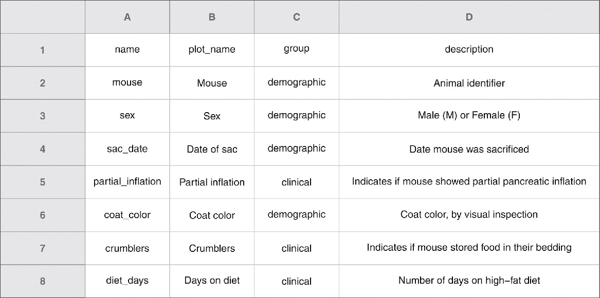
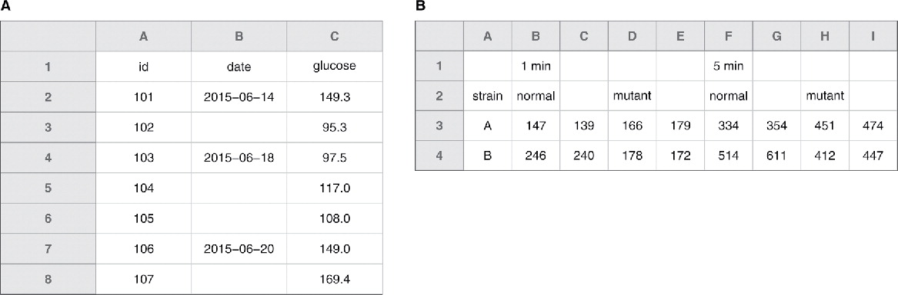

flowchart LR A["Osnovna tabela"] --> B["Tabela sa merenjima"] B --> C(lab_id) & D(datum)
1 Šta su uredni podaci
Svi uredni podaci su slični, ali svi neuredni podaci su neuredni na svoj način. — Hadley Wickham
Uredni podaci su oni podaci koji se mogu analizirati u statističkom softveru bez dodatne obrade. Postoji bezbroj načina da se napravi neuredna baza podataka. Samim tim, sređivanje baze je poduhvat jedinstven za svaku bazu. Neki principi sređivanja se mogu reciklirati, ali uglavnom postoji beskonačan broj načina na koje istraživač može da uneredi svoju bazu podataka čineći je neupotrebljivom. Ovaj članak će preći najbitnije savete za pravljenje urednih baza, sa ciljem da bude funkcionalan podsetnik odgovornim istraživačima. Dobar pregled teorije vezane sa uredne podatke se može pronaći u (Wickham, 2014).
Pravljene urednih tabela podataka podrazumeva obimniji posao na početku rada, ali se on višestruko isplati tokom analize podataka. U suprotnom, većina vremena se potroši na sređivanje podataka, a jako malo na konkretnoj nauci. Kvalitet istraživanja opada ako se nedovoljno vremena posveti analizi.
Prvi deo članka posvećen je gruboj organizaciji podataka u uredne tabele (Odeljak 2), sa savetima za pravljenje tabela namenjenim različitim funkcijama (npr. praćenje pacijenata). Drugi deo članka posvećen je samom unosu podataka (Odeljak 3), tj. pravilnom imenovanju varijabli, pisanju datuma, kodiranju kategorija i slično. Delovi su nezavisni jedan od drugog ali imaju neke zajedničke koncepte.
2 Grube forme baza
Isti podaci se mogu zapisati na više načina (Tabela 1, Tabela 2). Najbolji način organizovanja podataka je onaj gde se svi podaci nalaze na jednom mestu (Figura 1). Kako bi svi podaci bili sadržani u jednoj tabeli oni moraju biti upisani po principu:
- jedna kolona, jedna varijabla;
- jedan red, jedna opservacija;
- jedna ćelija, jedan podatak.

merenje i merenje_02 unešene zasebno.
| pacijent | starost | merenje | merenje_02 |
|---|---|---|---|
| 001 | 45 | 3.6 | 34 |
| 002 | 67 | 2.5 | 48 |
| 003 | 82 | 1.8 | 55 |
tip_merenja. Primetiti da se varijabla pacijent ponavlja i povezuje sva merenja sa odgovarajućim pacijentom.
| pacijent | starost | tip_merenja | vrednost_merenja |
|---|---|---|---|
| 001 | 45 | merenje | 3.6 |
| 001 | 45 | merenje_02 | 34 |
| 002 | 82 | merenje | 1.8 |
| … | … | … | … |
2.1 Pravougaona forma
Čuvanjem podataka na ovaj način dobijamo pravougaonik forme \(red \times kolona\) gde svaka ćelija mora imati neku vrednost, čak i ako ona nedostaje (videti Odeljak 3.3). Jako je bitno da svaka ćelija sadrži tačno jednu informaciju (Odeljak 3.6). Ukoliko se ovo ne ispoštuje, neminovno će doći do greške pri unosu podataka.

2.2 Ponovljena merenja
U zavisnosti od kompleksnosti ponovljenih merenja, tj. koliko podataka se prikuplja, treba razmotriti dve mogućnosti: široke/dugačke tabele ili relacione tabele. Široke tabele su korisne kada nemamo puno ponovljenih merenja ili varijabli. Tada je lako dodati još kolona za svako ponovljeno merenje. Međutim, kada imamo mnogo podataka, radi čitljivosti i fleksibilnosti, trebalo bi koristiti relacione tabele.
2.2.1 Široke i dugačke tabele
Široke tabele imaju prednost lakšeg popunjavanje (Tabela 3). Podaci se upisuju kako čitamo i pišemo, sa leva na desno. Alternativa širokim tabelama su dugačke tabele (Tabela 4). Upisivanje je napornije, ali su tabele preglednije.
| id | merenje_dan_01 | merenje_dan_02 | merenje_dan_03 | merenje_dan_04 |
|---|---|---|---|---|
| 001 | 3.4 | 2.4 | 5.4 | 3.2 |
| 002 | 1.5 | 2.3 | 2.3 | 1.4 |
| … | … | … | … | … |
id, koji povezuje merenja sa pacijentom (videti Odeljak 3.4).
| id | dan | merenje |
|---|---|---|
| 001 | 1 | 3.4 |
| 001 | 2 | 2.4 |
| 001 | 3 | 5.4 |
| 001 | 4 | 3.2 |
| … | … | … |
2.2.2 Relacione tabele
Relacione tabele su pogodne za belezenje velikog broja laboratorijskih analiza, pogotovo ponovljenih merenja. Ostavljaju osnovnu tabelu (koja sadrži opšte informacije koje se neće menjati) čitkom i smanjuju širinu baze, što je čini preglednijom. Laboratorijska merenja pacijenata su povezana sa osnovnim informacijama preko kolone id koja je jedinstveno (Odeljak 3.4) dodeljena svakom pacijentu u momentu kada je on upisan u bazu (MPH i ostali, 2013).
| id | starost | dijagnoza |
|---|---|---|
| 001 | 45 | dijagnoza_01 |
| 002 | 65 | dijagnoza_02 |
| 003 | 87 | dijagnoza_01 |
| id | lab_01 | lab_02 |
|---|---|---|
| 001 | 2.5 | 1.2 |
| 002 | 2.3 | 5.6 |
| 003 | 1.2 | 1.7 |
Koncept relacionih tabela je lako proširiti po potrebi. Kombinacija dve tabele povezane preko id, gde \(\text{tabela sa merenjima}\) sadrži lab_id (jedinstvenu identifikaciju laboratorijskog merenja) i datum, te se može koristiti za praćenje laboratorijskih parametara pacijenata tokom vremena.
| id | starost | dijagnoza |
|---|---|---|
| 001 | 45 | dijagnoza_01 |
| 002 | 65 | dijagnoza_02 |
| 003 | 87 | dijagnoza_01 |
| … | … | … |
| id | lab_id | lab_datum | rezultat |
|---|---|---|---|
| 001 | 001 | 2023-11-01 | 1.2 |
| 001 | 002 | 2023-12-15 | 5.6 |
| 002 | 001 | 2022-12-01 | 1.7 |
| … | … | … | … |
Prednosti relacionih tabela su mnogostruke. Ukoliko je potrebno izmeniti neki osnovni podatak o pacijentu, dovoljno je ažurirati osnovnu tabelu. Izbegava se ponovljeno upisivanje istih podataka i time se smanjuje verovatnoća greške.
Beleška
Relacione tabele je lako napraviti u Excel-u. Unutar jedne Excel radne sveske (eng. workbook) napraviti više odvojenih listova (eng. sheet) sa tabelama. Ne treba praviti više tabela jedne pored drugih!
3 Beleženje podataka
Najvažnije je biti dosledan. Uvek koristiti iste termine za dijagnoze i paziti na slovne greške. Jako je bitno odrediti klasifikacije koje će biti u upotrebi na vreme, kako ne bi došlo do nesuglasica.
Legenda
Jako je korisno napraviti legendu varijabli. Legenda podrazumeva pismeno objašnjenje značenja imena varijabli. Legendu treba napraviti na posebnom listu u Excel-u. Pravljenje legende je korisno jer forsira istraživača da razmisli o značenjima varijabli, i klasifikacijama koje će koristiti (videti Odeljak 3.5).

3.1 Opšta imena varijabli i podataka
Imena varijabli trebaju da budu kratka i jasna. Primeri dobrih naziva su dati u Tabela 5. Pored imena kolona, potrebno je dobro upisati i vrednosti u redove. Merne jedicine (75 (kg)) ne unositi u polja sa vrednostima, već ih izmestiti u imena varijable (tezina_kg); još je bolje ako se merne jedinice upišu u legendu (Odeljak 3), a imena varijabli ostanu jednostavna.
| Dobro | Alternativa | Izbegavati |
|---|---|---|
| tezina_kg | tezina | telesna težina (kg) |
| pol | pol | M/F |
| glukoza_01 | prvo_glukoza | 1. merenje glc |
| postop_dan_03 | POD_03 | treći postoperativni dan |
| visina_cm | visina | tv |
3.2 Datumi
Datumi i vreme su veoma problematični za unošenje (najviše zato što Excel tumači sve i svašta kao datum). Svetski standard pisanja datuma je forme YYYY-MM-DD (npr. 2023-12-05). Excel je notoran po tome da menja kolone sam, tražeći kao odgovarajući tip podatka koji je upisan. To govoto nikad nije dobra stvar, i treba obavezno proveriti unete podatke ako ih Excel promeni.1

3.3 Podaci koji nedostaju
Postoji velika razlika između toga da li smo načinili merenje i dobili nulu kao vrednost (\(\text{merenje} = 0\)) ili nismo uopšte imali opservaciju (\(\text{merenje} = \; ?\)). U prvom slučaju je jasno da laboratorijska vrednost opservirana (tj. viđena) ali je rezultat bio \(0\). U drugom slučaju merenje nikad nije napravljeno pa ne možemo da znamo da li je vrednost \(0\) ili bilo koja druga (Figura 3). Zbog toga se upisivanje ovih podataka razlikuje.
Najbolje je upisati \(\text{NA}\) (eng. not applicable/not available) u polje čija se vrednost ne zna. Moderni statistički programi prepoznaju ovaj unos kao poseban tip podatka različit od \(0\).

Upozorenje
Za upisivanje podataka se najčešće koristi Microsoft Excel. Neki autori daju preporuke da se nepoznata polja ostave prazna. Ovo može biti opasno jer se dešava da istraživač tokom upisa slučajno previdi prazno polje i pokvari redosled upisa podataka. Ako se odlučite za prazna polja, budite pažljivi!
3.4 Jedinstvena identifikacija opservacija
Svaka opservacija se mora jedinstveno obeležiti kako bi se sve vrednostu u tabeli povezale sa njom. U kliničkoj praksi je najbolje upotrebiti jedinstveni matični broj građanina. Međutim kako je ovo poverljiv podatak, neki istraživači se opredeljuju za broj istorije. Nažalost broj istorije pacijenta nije jedinstven, i mogu se naći različiti pacijenti sa istim brojem, pogotovo ako se podaci prikupljaju sa više izvora.
Rešenje je napraviti jedinstvenu kolonu, najčešće pod nazivom id, koja će služiti za identifikaciju opservacija. To mogu biti pacijent, merenje, medicinski aparat, ili drugo. id kolonu dodeljuje istaživač po svom nahođenju, jedini uslov je da svaka zasebna opservacija ima jedinstven način identifikacije. Svaki put kada se unose novu podaci u bazu treba napisati odgovarajući id kako bi se znalo na šta se odnose merenja.
Anonimizacija podataka
Podaci se mogu lako anonimizovati funkcijama tako da se uklone sve osetljive informacije. Kada već postoji id dodeljen od strane instraživača, dovoljno je samo anonimizovati identifikujuće informacije koje stoje uz id. Najpraktičnije, nekom kriptografskom funkcijom ukoliko je potrevno deanonimizovati te podatke u budućnosti, ili prostim brisanjem ako nije.
3.5 Kategorije i klasifikacije
Problem sa kategorijama je nedostatak sistematičnosti. Istraživači se susreću sa opservacijama koje u svojoj punoj veličini odbijaju da se klasifikuju. Na primer, specifična operativna tehnika koja podrazumeva odstranjivanje 3 segmenta jetre je različita od one koja odstranjuje samo 2 segmenta. Obe se mogu podvesti pod kategoriju: segmentektomija jetre, ali se gube detalji. Svaka gruba klasifikacija podrazumeva neki gubitak informacija. Koja vrsta klasifikacije će se koristiti zavisi od istraživačkog pitanja. Ako ne istražujemo specifične efekte segmentektomija jetre verovatno nećemo izgubiti mnogo ako koristimo grubu klasifikaciju. Samo je važno biti sistematičan i dosledan u svom zapisivanju podataka.
Bitno
Kategorije se ne moraju beležiti brojevima kao indikatorima (0 i 1). Moderni statistički programi prepoznaju kategorije kao reči. Bitno je samo obratiti pažnju na slovne greške. Jer dijabetes tip 1 je potpuno druga kategorija od dijabtes tip 1.
3.6 Granularni podaci
Granularni podaci podrazumevaju zapisivanje podataka detaljne, precizne i najfinije rezolucije. To znači da je uvek bolje zabeležiti nečiju telesnu visinu i težinu pre nego samo upisati gojazan. Grupisani podaci su isto neuredni. Ako imamo podatak o sistolnom i dijastolnom pritisku 120/80 mmHg, potrebno je razdvojiti ove vrednosti u pojedinačne kolone i ukloniti mernu jedinicu iz polja (Figura 4).
flowchart TD A["120/80 mmHg"] --> B[120] & C[80]
\[ \text{gojaznost} \xrightarrow{preciznije} \text{BMI} \xrightarrow{preciznije} \text{Visina, Težina} \]
Bitno
Uvek se iz granularnih podataka mogu izvesti zbirovi, odnosi ili grublje kategorije, ali se nikad ne može ići u suprotnom smeru — gubitak informacija je trajan.
\[ 180 \; mmHg \xrightarrow{\text{manje granularno}} \text{hipertenzivan} \]
\[ 180 \; mmHg \not\leftarrow \text{hipertenzivan} \]
Ne treba računati u tabelama. To je deo obrade podataka. Telesna visina i telesna težina su podaci. Njihovom kombinacijom se moze izračunati BMI (body mass index) pacijenta, što je izvedena mera. Nema potrebe trošiti vreme na mere izvedene iz podataka.
3.7 Beleške
Treba izbegavati čuvanje informacija formatiranjem (bojenje ćelija, podvlačenje, zadebljavanje teksta, itd.), takve promene su nevidljive statističkom softveru — ako je nešto bitna informacija onda mora da bude zapisano kao podatak. Ukoliko je potrebno imati beleške, najbolje je napraviti posebnu varijablu beleske.
4 Zaključak
Pravilan unos podataka i uredne baze ostavljaju prostora za kvalitetne analize i konkretna naučna pitanja. Polje dizajna baza podataka je veliko, ali za potrebe istraživača ove smernice su sasvim dovoljne. Ne zaboravite da konsultujete svog univerzitetskog statističara pre prikupljanja podataka!
Rezime
- Doslednost
- Upisivati granularne podatke kad god je moguće
- Ako je nešto bitna informacija, onda je upisati kao podatak
- Pisati datume u formi YYYY-MM-DD (2023-11-05)
- Bez praznih polja, koristiti \(\text{NA}\) za podatke koji nedostaju
- Bez mernih jedinica u poljima
- Napraviti legendu
Reference
Broman, K. W., & Woo, K. H. (2018). Data Organization in Spreadsheets. The American Statistician, 72(1), 2–10. https://doi.org/10.1080/00031305.2017.1375989
Christie Bahlai, & Aleksandra Pawlik. (bez dat.). Formatting data tables in Spreadsheets. https://datacarpentry.org/2015-05-03-NDIC/excel-ecology/01-format-data.html
Grolemund, H. W., & Garrett. (bez dat.). Welcome | R for Data Science. https://r4ds.had.co.nz/
Lewis, D. (2021). Autocorrect errors in Excel still creating genomics headache. Nature. https://doi.org/10.1038/d41586-021-02211-4
MPH, D. S. B. H. M., MD, S. R. C., MPH, W. S. B. M., MPH, D. G. G. M., & MPH, T. B. N. M. (2013). Designing Clinical Research (Fourth edition). LWW.
Wickham, H. (2014). Tidy Data. Journal of Statistical Software, 59, 1–23. https://doi.org/10.18637/jss.v059.i10
Fusnota
Excel je uneo neverovatnu pometnju u polje genomike, jer uporno tumači imena gena kao datume. Ove greške se uporno provlače jer Excel svoje izmene ne prijavljuje već ih radi “tiho” u pozadini, ne dajući obaveštenje korisniku (Lewis, 2021).↩︎
Navođenje
BibTeX navođenje:
@online{n. grubor2023,
author = {N. Grubor, Nikola},
title = {Uredni Podaci u Biomedicinskim Naukama},
date = {2023-11-05},
url = {https://nikola-grubor.github.io/myblog/posts/sr/uredni-podaci},
langid = {sr-Latn}
}
Za pripisivanje autoru, molimo navedite ovaj rad sa:
N. Grubor, N. (2023, November 5). Uredni Podaci u Biomedicinskim
Naukama. https://nikola-grubor.github.io/myblog/posts/sr/uredni-podaci